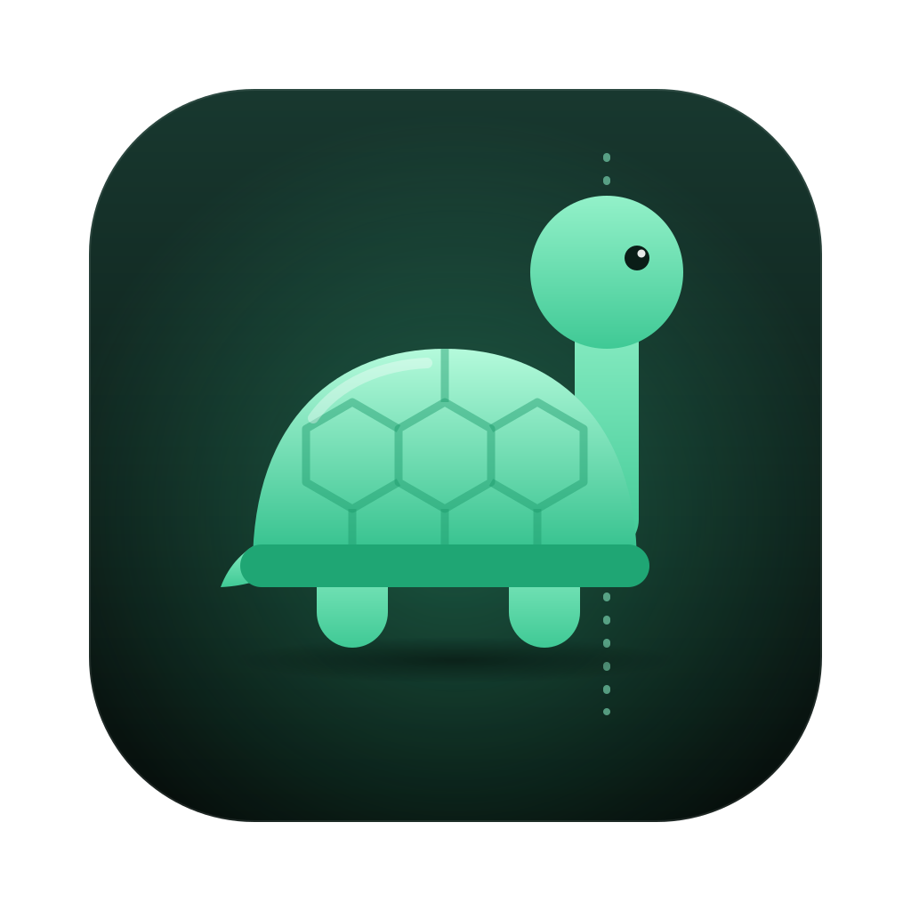

🔥
점점 세지는 잔소리
처음엔 부드럽게, 그다음엔 짜증, 결국엔 분노. 잔소리 문구를 한국어로 직접 쓰거나, 거북이를 고양이·부엉이·내 사진으로 바꿀 수 있어요.

TurtleNeck무료 오픈소스 · 모든 처리는 내 기기에서
TurtleNeck은 화면 쪽으로 구부정해지는 순간을 알아채고 잔소리꾼 거북이를 보내요. 오래 구부정할수록 거북이는 점점 화를 내요.
macOS 13+ · Windows 10/11 · 무료, 계정 필요 없음
// 3 hours later… func workHarder() { while deadline.isTomorrow { neck.angle += 1 // 🐢 type(faster: true) } }
바르게 앉아 5초만 기다리면, 그게 기준 자세예요.
1초에 한 번 웹캠 화면 속 얼굴 위치를 확인해요. 아무것도 컴퓨터 밖으로 나가지 않아요.
고개를 숙이거나 화면 쪽으로 다가간 채 5초가 지나면 거북이가 미끄러져 들어와요.
처음엔 부드럽게, 그다음엔 짜증, 결국엔 분노. 잔소리 문구를 한국어로 직접 쓰거나, 거북이를 고양이·부엉이·내 사진으로 바꿀 수 있어요.
얼굴 인식은 내 컴퓨터에서만 돌아가요. 영상은 녹화·저장·업로드하지 않고, 계정도 분석 도구도 없어요.
일별 점수, GitHub 잔디 같은 연간 캘린더, 그리고 주말에 쉬어도 끊기지 않는 연속 기록.
일어나서 스트레칭하라고 알려주는 뽀모도로 타이머. 설정도 기억해요.
근무 시간 스케줄, 앱별 일시정지, 민감도와 쿨다운 설정. 메뉴 막대에서 클릭 한 번이면 일시정지돼요.
1초에 한 프레임만 분석해요. 메뉴 막대나 시스템 트레이에 조용히 있어요.
아니면 그냥 DMG를 다운로드하세요. 같은 명령을 다시 실행하면 업데이트돼요.
터미널에서:
curl -fsSL https://raw.githubusercontent.com/kpryu6/turtleneck/main/install.sh | bashHomebrew로:
brew tap kpryu6/turtleneck && brew trust kpryu6/turtleneck && brew install --cask turtleneck또는 PowerShell에서:
irm https://raw.githubusercontent.com/kpryu6/turtleneck/main/install.ps1 | iex내 계정에만 설치되고 관리자 권한이 필요 없어요. 언제든 설정 → 앱에서 삭제할 수 있어요. 아직 코드 서명이 없어서 Windows SmartScreen 경고가 뜰 수 있어요. 추가 정보 → 실행을 누르세요.
모든 릴리스는 GitHub Actions가 소스에서 직접 빌드하고, 서명된 빌드 출처 증명이 함께 붙어요. 받은 파일이 정말 이 저장소에서 만들어졌는지 확인할 수 있어요:
gh attestation verify TurtleNeck.dmg --repo kpryu6/turtleneck카메라 영상은 기기 밖으로 나가지 않아요. TurtleNeck은 기준 자세와 비교하기 위한 얼굴 위치와 크기만 기억해요.